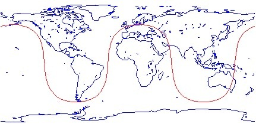
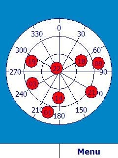

Windows Mobile 6 phones are out and about, and several of them have
built-in GPS. Some people find that the GPS doesn't work well with Live
Search for Mobile, so I hope this post will help explain why GPS can be
tricky. Note that you should make sure you are running the latest
version of Live Search (from December '07) as this has some improvements
in the timeout handling which will help.
First of all, the phones are pre-configured to use the GPS Intermediate
Driver, but Live Search does not know about these phones so by default
GPS is not configured. Make sure you have Live Search set to use GPS
Intermediate Driver (go to Menu-Settings from the main form to access
the GPS settings).
When you first say “Center on GPS” in the map, the phone needs to get
the GPS ephemeris data (which tells it where the various satellites are
located in three dimensional space). That requires a clear line of site
to 3 or more GPS satellites to receive a non-error corrected data
payload that takes 30 seconds to transmit. Move around during this time
and you can interrupt the process. You really need to be outside,
preferably away from tall buildings, and avoid moving in a way that
changes the various paths between your phone and the sky. Just your body
is enough to block the transmission. If you're in your car, try putting
your phone on the dashboard by the windshield for a minute. Note that
even with a clear line of site, this process will take an average of 45
seconds (the \~15 seconds for the current frame to finish transmitting
plus the 30 seconds for the next complete frame).
Unfortunately many people don't know this, and so when they don't get a
fix after about 30 seconds they move around thinking this will help, but
it actually makes things worse.
Once GPS has the ephemeris data it is much more tolerant of errors and
you can move around much more freely while you have a fix. The ephemeris
data that comes over satellite is good for at most 4 hours and then
needs to be refreshed, so the ephemeris retrieval process must be
repeated periodically. Note that even with ephemeris loaded, it still
takes at least 7 seconds to get an initial GPS fix, typically longer.
The bottom line here is that if you do not already have ephemeris, then
even with perfect condition you will need at least 37 seconds to get
your first fix, and the reality is much more likely to be around a
minute. Move around or have obstructions and you could be talking
several minutes.
Some phones (e.g. AT&T Tilt, which has a Qualcomm GPS chipset) have
utilities that can fetch ephemeris over the Internet and prime the chip
that way (this is called QuickGPS.exe on the Tilt), speeding up this
initial step. These have the advantage of being able to fetch much more
than 4 hours of data, potentially up to 7 days (although I think in
reality QuickGPS.exe fetches around 4 days). AFAIK there is no such
utility on the BJ2, nor on the Motorola Q9H. The SirfStar III chipset on
the BJ2 and MQ9h potentially has the capability, depending on the
firmware version loaded on the chip, but I don't believe it's exposed.
If you're quite far north (e.g. Seattle) you should get a fix more
easily if you face south. The reason for this has to do with the
satellite orbits. There are 24 satellites in 6 orbits (4 satellites per
orbit; each orbit takes 12 hours). The orbits are tilted at 55 degrees
to the equator but do not go over the poles. Here is a sample orbit:

The other five orbits are similar but each is offset by 30 degrees
longitude. You can see from this that if you are in Alaska or Greenland,
for example, all satellites will be to your south. Once you get to
Seattle you're typically going to have about 60% of the visible
satellites to your south. The effect diminishes the closer to the
equator you go, but clearly for the northerly states and Canada facing
south is a good strategy. You can see an example by looking at this
screenshot I took using
GPSTest
outside my office here in Redmond:

There is a hack floating around on the 'net in the form of a CAB file
that makes the GPS accessible via COM ports. On the BJ2 it enabled COM4
and on the Q9h it enabled either COM5 or COM3, depending on which CAB
file you get. The COM5 CAB on Q9h 'speeds up' the initial fix;
unfortunately the reason it does so is that it keeps the port open the
whole time, and will kill your battery life. The COM3 CAB for Q9 doesn't
keep the port open and won't offer you any speed improvements.
Interesting side note: I've been told that the USAF who provide the
ephemeris data that is transmitted by the satellites only calculate
ephemeris for 24 hours - beyond that the error that creeps in to the
calculations based on Keplerian equations makes the data no good.
However NASA independently calculates much more accurate data
incorporating such things as tectonic shift and is the source of the
multi-day data.
{kind=link}
{kind=link}